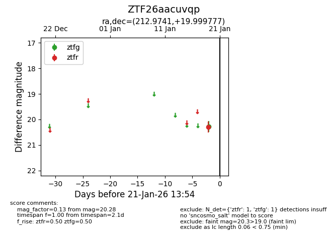
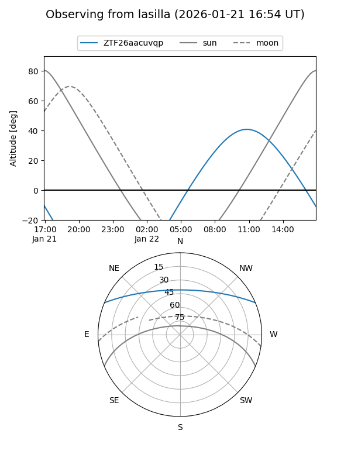
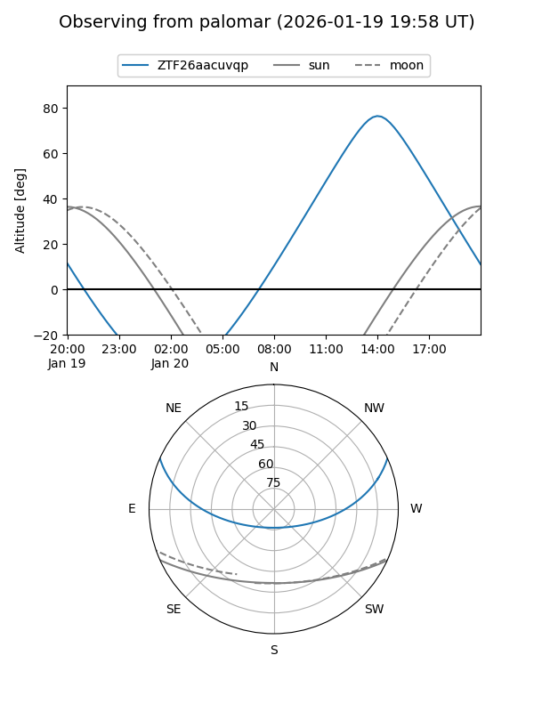

ZTF26aacuvqp
Target ZTF26aacuvqp at 2026-01-21 13:56
Aliases and brokers:
FINK: link
Lasair: link
ALeRCE: link
alt names
ZTF26aacuvqp (ztf,fink_ztf)
Coordinates:
equatorial (ra, dec) = 212.9741,+19.99978
equatorial (HMS+DMS) = 14:11:53.77,+19:59:59.20
galactic (l, b) = (16.0682,+70.26438)
Flags:
Photometry:
last ztfg=20.28, ztfr=20.29
1 ztfg, 1 ztfr detections
Lightcurve

Visibility


Additional plots